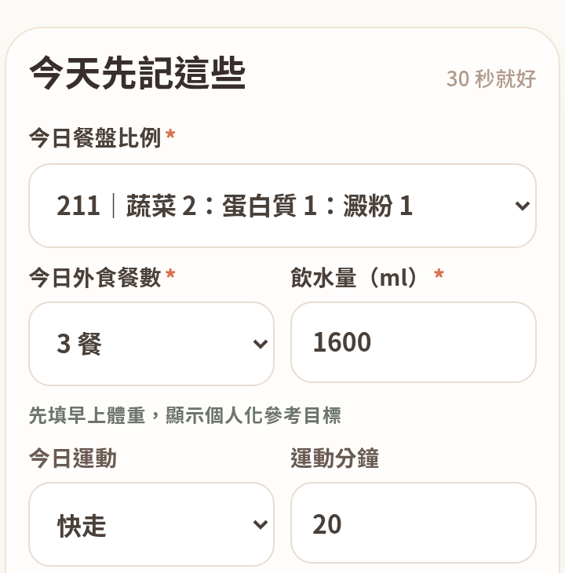

30 秒今天先記這幾樣
外食也沒關係 ｜ 先記一餐就好
天天外食，
先記一餐就好
不用備餐，也不用算熱量。餐盤、外食、喝水、運動，30 秒記好。
✓ 免下載 App✓ 30 秒就好✓ 不用算熱量
今天先記這些30 秒就好
今日餐盤比例211｜蔬菜 2：蛋白質 1：澱粉 1
今日外食餐數1 餐
蛋白質狀況足夠
蔬菜狀況足夠
飲水量（ml）1800
不用完美
先記一餐
先記一餐
外食也能
慢慢記 ♡
慢慢記 ♡
外食也行超商、便當、手搖
其他可晚點想記再補
免下載 App手機打開就用
一天這樣記 示範資料
天天外食，
一天這樣記就好
早餐超商、午餐便當、晚上聚餐，每餐記一句就好。不用算熱量，也不用拍照。
早餐超商
茶葉蛋＋御飯糰
飲料：無糖豆漿
午餐便當
滷雞腿便當，飯半碗
備註：加一份燙青菜
晚餐聚餐
同事聚餐火鍋
備註：先吃菜跟肉，冬粉半份
今天先記這些・30 秒
餐盤比例211
外食3 餐
喝水1600 ml
運動快走 20 分
聚餐也照記就好，不用補償，明天照常吃 🍵

App 實際畫面
自己試記一餐 →
以上是示範資料，不是真實使用者紀錄。
外食記錄小測試先選今天的情境，
先選今天的情境，
看看怎麼記錄
不用追求完美，先從記錄一餐開始。
步驟 1／2選一個今天最常遇到的情境
第一步
今天想吃哪一種？
第二步
選一個餐點看看阿茶怎麼說
外食也可以慢慢調整不用一次改很多，
不用一次改很多，
先記下今天吃了什麼。
忙到只能外帶、下班只想喝杯喜歡的飲料，偶爾吃多一點……這些都不是「失敗」。
阿茶不會叫你重新開始，我們只一起看看：下一餐，能不能先做一個比較輕鬆的選擇？
「不用完美，先讓照顧自己變得比較容易。」— 阿茶
完整版節錄 實際內容
不知道吃什麼？
不知道吃什麼？
打開照著點
早餐、午餐、晚餐、下午茶、宵夜都有現成配法。先給你看 3 組：
🍗 晚餐・便當
雞腿蔬菜便當組
蔬菜青菜 2 格
蛋白質烤雞腿
澱粉白飯半碗
蔬菜青菜 2 格
蛋白質烤雞腿 ＋ 滷蛋
澱粉白飯 2/3 碗
🍲 晚餐・聚餐
火鍋聰明選組
蔬菜蔬菜盤
蛋白質肉片 1 份
澱粉冬粉半份
飲品：無糖茶
蔬菜蔬菜盤
蛋白質肉片 1.5 份 ＋ 豆腐／蛋
澱粉冬粉半份
🍽️ 午餐・自助餐
台式自助餐組
蔬菜綠色青菜 2 格
蛋白質滷雞腿／蒸魚
澱粉白飯半碗
蔬菜綠色青菜 2 格
蛋白質滷雞腿 ＋ 滷蛋 1 顆
澱粉白飯 2/3 碗
🔒 其他組合在完整版
聚餐吃多了？下一餐這樣接
🍲 火鍋先吃蔬菜＋蛋白質，主食半份
🍗 鹹酥雞搭青菜或豆製品，醬料減半
🛵 外送先選蛋白質與蔬菜，甜點分食
節錄自完整版內容。實際品項以各門市為準；這是外食選擇參考，不是醫療或營養處方。
3 步就開始今天就能記，
今天就能記，
不用先學工具
先免費記一餐。想留下 365 天，去 Portaly 一次買斷。
1
先免費記這幾樣
打開「今天先記這些」：餐盤比例、外食幾餐、蛋白質和蔬菜、喝水跟運動。30 秒就好。
2
NT$ 99，去 Portaly 一次買斷
不用備餐，也不用先學。想把紀錄留下來，再去 Portaly 買。
3
買完加 LINE 開通
開通之後，工作台不會記、卡住或畫面問題，也來這裡問。
記一個月會看到 示範資料
記了一個月，
記了一個月，
自己看得到
每個月幫你收一收：記了幾天、外食幾餐、喝水跟運動各幾天。
13 天有記錄
23 餐外食
13 天有記喝水
9 天有運動
「這個月記了 13 天，外食 23 餐，有運動 9 天，辛苦了。」
示範資料，實際會依你記下的內容顯示。不保證任何體重變化。
一次買斷，打開就能開始外食的日子，
外食的日子，
先記一餐就好
吃飯、記錄、回頭看，都從今天這一餐開始就好。
一次買斷，打開就能記
免下載 App・手機打開就能記
NT$ 99一次買斷・想留再買- 📱 《阿茶 ｜ 365減脂打卡手記》今天先記這幾樣，30 秒就好。免下載 App，手機打開就能記。
- 📅 每月、每年幫你整理記了幾天、喝水、排便、早睡、運動各幾天。自己看就好。
- 🍱 《三大超商高蛋白 30 選》7-11、全家、萊爾富，站在貨架前照著拿就好。
- 🍕 《外食聚餐怎麼點》火鍋、鹹酥雞、外送，下一餐回到簡單一點的吃法就好。
- 💬 《阿茶 LINE》工作台不會記、卡住了，也可以問。
已經買了？用購買 Email 登入
常見問答 FAQ
第一次使用？
第一次使用？
從一餐開始就好
常見的使用問題，先看這裡。
我不會用，買了會不會放著？＋
先免費記一餐就好。開通之後，到登入頁用購買 Email 收驗證連結登入。
購買後第一步要做什麼？＋
先加 LINE 跟阿茶說一聲開通。開通後打開登入頁 https://swjonlyone.github.io/acha/app/?unlock=1，用購買 Email 收驗證連結登入，再記今天的一餐。工作台不會記、卡住了，也可以在 LINE 問。
LINE 可以問什麼？＋
工作台用起來卡住、不會記、畫面怪怪的，都可以問。已經開通的話，到登入頁用購買 Email 收驗證連結登入。
付款後怎麼使用？＋
NT$ 99 一次買斷。開通後到登入頁，用購買 Email 收驗證連結登入。
這是什麼格式？＋
手機網頁，免下載 App。開通後到登入頁就能記。
可以分享給家人或朋友嗎？＋
本產品為個人使用授權，每筆訂單限購買者本人使用，請勿轉售、轉傳或公開分享。需要協助時，可以透過 LINE 詢問操作問題。
適合什麼樣的人？＋
適合每天吃外食、不想先學複雜工具、希望開始記錄飲食的人；不提供醫療或個人化營養診斷。